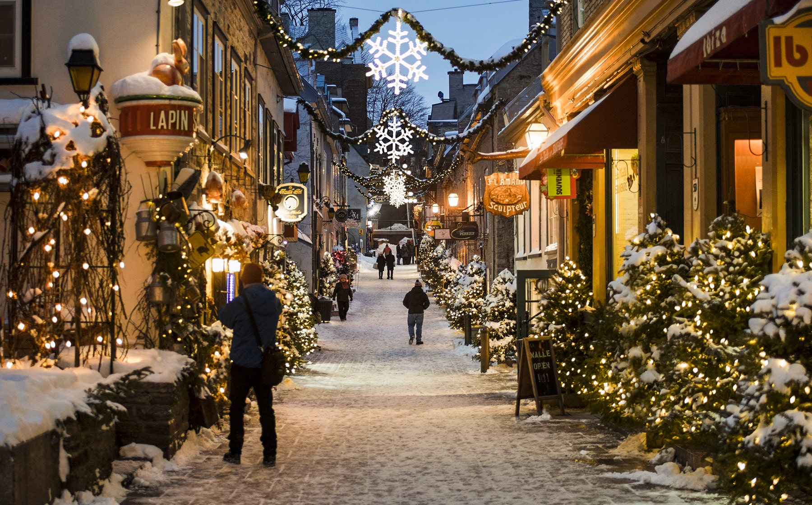
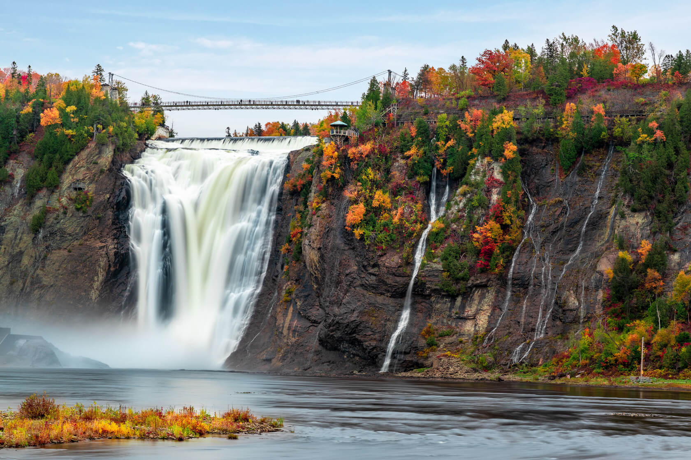
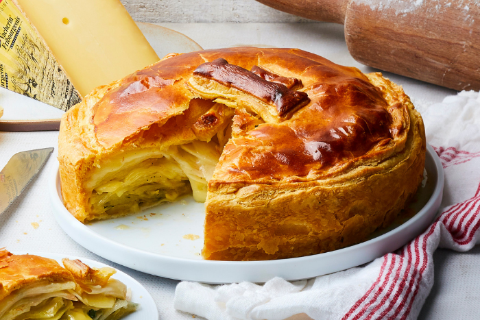
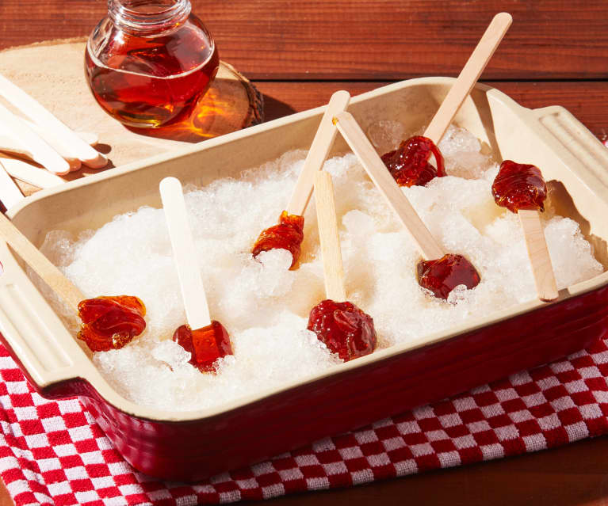

Top Attractions in Quebec City
Discover the must-see places in Quebec.

Château Frontenac: A historic luxury hotel and a symbol of Quebec City.

Quartier Petit Champlain: A charming district with cobblestone streets and boutiques.

Montmorency Falls: A stunning waterfall higher than Niagara Falls.
Come and Taste Quebec's Gastronomy

Poutine: Fries, cheese curds, and gravy—a Quebec classic.

Tourtière: A traditional meat pie, especially popular during the holidays.

Tire sur la neige: Hot maple syrup poured on snow and rolled into a sweet treat.